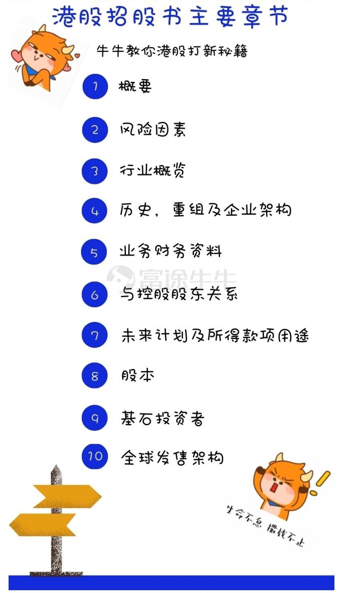
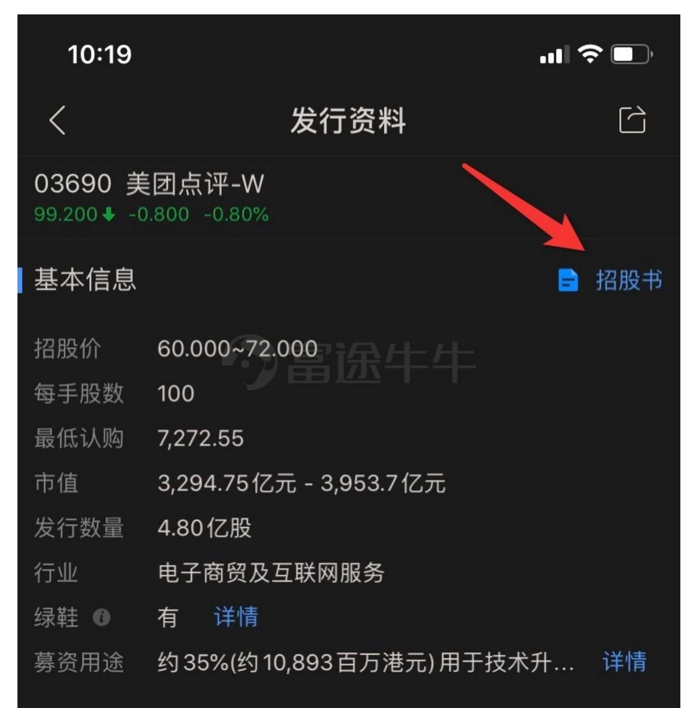

6.1.4.1. 打新秘籍 | 读不懂招股书？看这几个指标就够了
正式的招股书目录，通常多达四五百页，为了「申购or不申购」去通读显然不太现实，尤其是对于毫无财务基础的小白而言，更是难以下手，这么多信息，怎么看呢？ 今天牛牛就教大家快速读懂招股书，从三个方面共10点来了解公司业务现状和未来发展前景，并抓住打新重点指标保荐人、绿鞋、基石、投资等。

6.1.4.1.1. 01 招 股 书 是 什 么
招股书，又称招股说明书或公开说明书，是股份有限公司在发行股票时，就发行中的有关事项向公众作出披露，并向非特定投资人提出购买或销售其股票的要约邀请性文件。
首先，每家券商在新股简介以及招股书的概要部分里都会整理出新股最基本的信息，像招股日期、截止日、中签日（暗盘）、发行价格区间、发售数量、市值等等。
我们从这个简况中就能获取很多信息，以美团为例。

此外，市值可以表明公司的体量。一般市值小于6亿的新股，首日表现优于市值大的股票（这里与上篇冲突）入场费低，相对容易炒作。
绿鞋，也称绿鞋机制或绿鞋期权，是首次公开募股（IPO）招股说明书中的一项特殊条款，指允许承销商向投资者出售比发行人原计划更多的股票，在法律上被称为「超额配售权」。
在招股说明书中，绿鞋机制允许承销商以发行价在注册制证券发行中卖空股票。绿鞋机制的操作范围不尽相同，但通常不会超过原始发行量的15％，这保障了公开发行的稳定性和流动性。
下面我们将从基本面和 IPO 流程信息两个方面来判断一家公司上市的风险和前景。
6.1.4.1.2. 02 基本面
历史、重组及企业架构
该部分会写公司历史上的重要里程碑事件，公司在一级市场的融资情况，很多公司在上市之前给媒体吹风说融了多少多少钱，有没有水分这这个区域都会露出马脚，可以此检验公司的诚信度。该部分包括公司重组后的股权架构。
业务及财务资料
该部分有部分内容与概要部分重合，业务部分详细介绍了公司的主营业务状况，投资者利用业务数据，可以判断公司主营业务前景。
财务数据，包括利润表、资产负债表和现金流量表，先看看3年内的营收和利润增速，如果增速高且属于稳定增长，会让市场安心不少，如果属于一年不如一年，或者3年内没什么增长，这类公司估值就很低。
业务数据与财务数据不同，财务数据是业务运行的结果，根据业务数据是要判断公司的增长前景。另外，对于朱盈利的公司，在港股也处于被质疑状态，从2017年开始，大量未有盈利的独角兽公司在港股挂牌，上市后多数表现不佳。
风险因素
风险因素，说的是公司会面临哪些风险。有业务上的风险，也有监管方面的风险，还有来自公司本身的一个风险，比如说人员不稳定或者资金来源等。
「风险因素」部分给投资者展示的是上市公司可能面临的风险，可以理解为上市公司可能存在的瑕疵，对于投资者而言，在为上市公司靓丽业绩激动万分之时，适时阅读一下风险因素降降温，百利而无一害，有利于投资者全面了解上市公司。
行业概览
要全面了解一家上市公司，可以从阅读概要开始。概要是缩减版的公司业务情况、风险因素、财务数据、控股股东、募集资金用途等介绍，如果没有时间去细看招股书的话，把概要看完就差不多了。
对于打新投资者而言，更应关注公司的主营业务。
我们首先需要了解的是公司是干什么的？提供什么样的产品和服务。从产品或服务，可以大概构造出一个产品干什么用，大概会有多大空间。以美团为例，针对消费者，美团提供吃、住、行、游、购物及娱乐等多种服务，针对商家，美团点评提供多种解决方案使其运营数字化，属于快速发展的产业，有着不错的前景。
03 IPO流程信息
保荐人
保荐人，类似上市推荐人，从公司计划上市一直陪伴至公司上市，帮助拟上市公司撰写招股书，向港交所提交申请版本招股书，答复港交所的问询，是决定公司能否顺利上市的关键。牛友可以在阿思达克官网找到保荐人比较，查看他们的新股保荐战绩。
董事及参与全球发售的各方关系
该部分是拟上市公司的董事会成员名单和简介，一般来说，豪华的董事会会加强投资者的信心，尤其是董事会成员有香港本地的知名人士或太平绅士。该目录下还包括公司聘请的会计师事务所和律师事务所，聘请全球四大会计师事务所（普华永道、德勤、安永和毕马威）更容易加强投资者信心。
上市公司与控股股东的关系部分会阐述双方如何处理关联交易，关联交易的定价是否公平，对于关联交易比较多的上市公司，投资者应该提高警惕。
股本
可以查阅公司发行后总股本，根据总股本情况，结合公司的最近一年的净利润，可以计算公司的每股收益，并根据发行价计算公司的发行市盈率和发行市净率，根据这些基本估值数据，可以与同行业公司进行比较，以对公司的发行定价是否昂贵做出基本判断。
基石投资者
该部分并非所有的拟上市公司均有，只有上市前引入基石投资者的公司才会公布，一般大型的 IPO 都会引入基石投资者，基石投资者有所定期，一般为6个月，明星级别的基石投资者可以吸引散户认购。
出现基石投资一般有2种可能。
第一种：新股实在糟糕，需要基石投资保驾护航，吸引其他投资者前来认购，才能顺利完成 IPO 发行。
第二种：新股确实有前景，基石投资者为了争取到一定新股配售股份，争先恐后抢当基石投资。
所以不要认为有基石的新股就一定是好股，还是要综合考虑哦~
全球发售的架构
该部分主要讲述公司本次发行上市的相关安排，包括发行价区间，还包括新股申购的回拨机制。香港新股一般会分为国际配售和公开发售两部分，90％的股票国际配售配发，另外的10％就是公开发售，给所有投资者去认购，主要是散户投资者。
按照港交所的发行规则，当散户超额认购达到一定倍数，国际发售部分要向公开发售部分回拨。
6.1.4.1.3. 结语
讲了这么多，不知道各位牛友们是不是已经被绕晕了呢~
关于招股书的重点就讲完啦，读招股书不但利于打新选股，还能迅速丰富你的商业知识库，积累硬核知识点，让大家在投资路上越走越顺。
不过理论要结合实践，打新也是实践出真知，多翻看一些招股书，多一些自己的理解，这样投资之路才能越走越好！
最后，祝大家好运，理性选股，打中牛股！